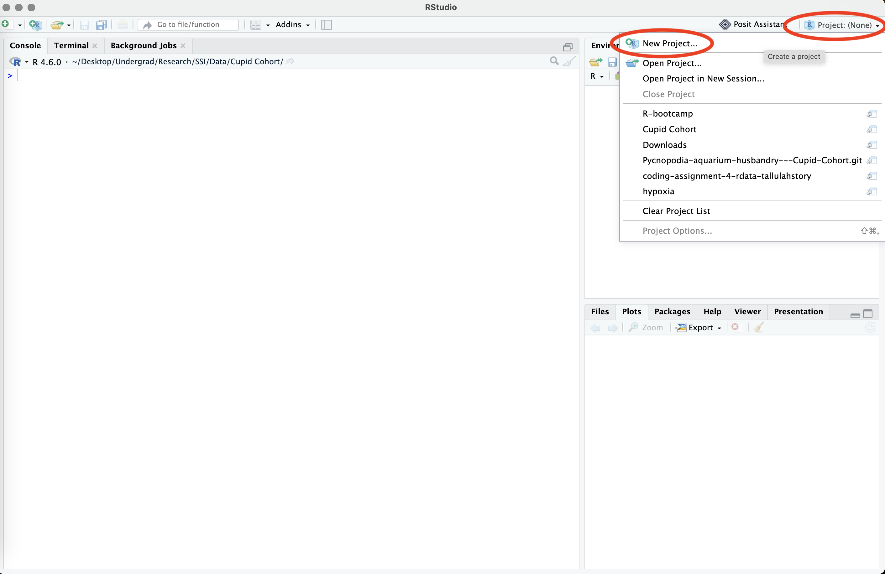
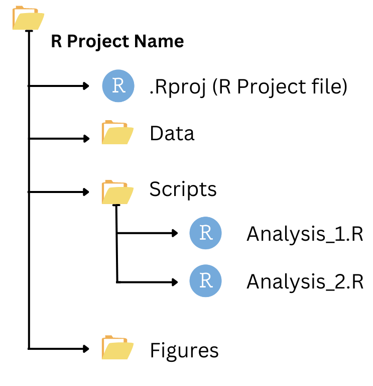

getwd()Tutorial 0: RStudio and Rmarkdown Basics

Photo Credit: Show Me Mizzou Research News | Rebecca North
Welcome to your first R bootcamp tutorial! Well, technically this is tutorial 0, but this lesson will form the foundational knowledge you will need to start learning the basics of coding in R! Let’s get started…
Learning Objectives
Be able to describe and navigate the RStudio computing environment.
Learn how to set your working directory and understand pathing in a computing environment.
Learn how to create new script, .rmd, and quarto files.
Be able to set evaluations and inclusions in .rmd code chunks with knitr::.
Understand good code etiquette and commenting guidelines, especially with research reproducibility in mind.
Tour De RStudio
You should begin this first lesson by opening up RStudio on your computer. Again, this might be a foreign interface, and there’s a lot of buttons, tabs, and windows here. Here is a general overview of what you might be looking at if you were (for example) currently working on a project with a .rmd file.

Now your RStudio won’t look exactly like that when you first open it. Instead, it will look more like the screenshot below. Firstly, direct your attention to the top tab that says “Console”, “Terminal”, and “Background Jobs”.

The Console is where you will type your R code, and where most responses will print. We will use the terminal later in this course, but for now lets just focus on the Console. Find the point where your cursor is blinking towards the bottom. The > indicates the Prompt space. This is where you can type your commands directly into the Console.

Setting your working directory
Now, we’re going to type out first command into the Console! Yay! Go ahead and either manually type or copy/paste the command below then press ‘return’ or ‘Enter’ on your keyboard (depending on what your keyboard looks like):
R
Reminder: We will only be using the R language in this “first” tutorial, so from here on out I will not specify what language we’re working with.
Congrats!! You’ve now typed your first command in R. This should result in a response being pasted below your prompt that looks (something) like this.

Above, you asked R to “get my working directory” with the command getwd() by using the starting prompt > in the Console. This is lot’s of new vocabulary, so lets zoom in and break it down.

Essentially you’ve commanded R to getwd() and it prints your response, above a new prompt line. This is how R works (for the most part). You will type a command in the Console (or in a R chunk) and it will print a response for you either in the Console, one of the Windows to the right of your screen, or in the menu above.
Getting and setting your working directory is one of the first things we want to do when we start a new project, document, or script file. This ensures that R knows where your data is stored on your computer and successfully import it into RStudio, and also gives you a place to save your work as you go.
There are two methods to set your working directory if you’re not working inside an Rproject.
Option 1: Manually set your working directory
As you can see, when I run the code getwd() code, it tells me that my working directory is currently a space on my computer called “/Users/loganstory”. What this really means is that when I try to read new files into R, or write files out of R, it will assume that I want to put them in this folder.
We want to change our working directory whenever we make a file in R so we know where we’re working. In order to change your working directory, we will use the setwd() function. For example, if I wanted to change my working directory to an existing folder called R-bootcamp located on my Desktop under my PhD and Teaching folders, I’d run the following code:
setwd("/Users/loganstory/Desktop/PhD/Teaching/R Bootcamp/R-bootcamp")By setting your working directory, you ensure that R knows where to find your data and where to save your outputs, making your workflow more organized and efficient. You can create separate folders for images, data, scripts, and tables.
Option 2: Point-and-Click Approach in RStudio
There is also point-and-click approach to setting your working directory. I personally prefer setting my directory manually, but others might like this better. To do this:
Go to the ‘Session’ menu.
Select ‘Set Working Directory’.
Choose ‘Choose Directory…’ and navigate to your desired folder.

(Optional) Option 3: Working with RStudio Rprojects
RStudio Projects provide a convenient way to manage and organize your data analysis work. Instead of setting your working directory every time, you can work with projects and do not have to worry about working directory. A project creates an isolated workspace, ensuring that all files, data, and settings are kept together. This helps maintain a clear and organized workflow, especially for complex or long-term projects. In this course we will use projects to keep all of our sequencing data organized, and to help with interfacing with git.
To create a new project in RStudio, you can either manually use code or the point-and-click approach:
Point-and-Click Approach in RStudio:
Click on the
Filemenu.Select
New Project....Choose
New Directoryfor a new project orExisting Directoryto use an existing folder, or maybe ever create a new one.Follow the prompts to set up your project.
For this course, you will get specific instructions on how to create your projects, or you will already have a project file to download and open on your own (without even having to create one.
Another point-and-click option:
Go to the top right corner and select the
Project: (None)icon.Select
New Project.

- Select
New Directory->New Project. - Name your project and select a directory (i.e., folder you are working).
- Click
Create Project.
By using RStudio Projects, you ensure a more organized, efficient, and reproducible data analysis workflow. Your folder management might look something like this with projects. Projects help you keep everything related to a specific analysis in one place, making it easier to manage your work and collaborate with others.

Understanding Absolute and Relative Paths
Make sure you start by setting your working directory to somewhere on your computer where you’re fine with working in. For the sake of this course and these tutorials, I suggest doing something similar to the following:
- Create a primary folder on your desktop called ‘EVE 113’.
- Create a sub-folder inside ‘EVE 113’ called ‘Coding Tutorials’ – (this will let you keep coding tutorial work and class coding work separate).
- Create another sub-folder called ‘Tutorial 0’.
The path you’ve just created will be something along the lines of “/Users/yourusername/Desktop/EVE 113/Coding Tutorials”. A file path tells you (and your computer) the exact place you can locate a file. Paths can either be absolute or relative. You use paths to set your working directory.
An absolute path would be something like this: /Users/yourusername/Desktop/EVE 113/Coding Tutorials/Tutorial 0 on macOS and C:\Users\yourusername\Desktop\EVE 113\Coding Tutorials\Tutorial 0 on Windows.
Here the working directory is explicitly specified (
/Users/yourusername/Desktop/EVE 113/Coding Tutorials).It includes the set destination for a file (
/Tutorial 0), or essentially where you want to go with the path.
A relative path would look like this: ./Tutorial 0
Here, the working directory is implicitly specified.
A
.before the forward or backslash indicates you are moving down the path, whereas..indicates movement up the path.
This idea is simply illustrated here:

EXAMPLE
larry or nelle can set their working directory as
/Users/larryor/Users/nelle. If either of them wanted to access a file (for example) called ‘image.png’ inside their working directory they would use the path./image.png.If either of them wanted to access a filed called ‘image.png’ outside of their working directory under
data, they would use an absolute path of/data/Documents/image.png.
Tip
Do It Yourself T0.1
1a. Using the Console, set your working directory to the Tutorial 0 folder.
1b. Use a command to print your working directory.
1c. Change your working directory back to your root directory.
Understanding the path concept will help you when saving, accessing, and moving around your internal operating system. If you encounter problems setting your working directory, try restarting the RStudio application before seeking further assistance.
Creating and Exploring a new .rmd file
A .rmd (or Rmarkdown) file is a type of R script file that allows you to provide detailed descriptions of your code, analyses, and even interpretation. Rmarkdown files also are also great for creating class assignments, writing manuscript code, or even cross-working between two different code languages (like R and python, for example). These tutorials were actually written in a similar interface known as a quarto website, but all you need to know about that is it functions relatively similarly to a Rmarkdown file.
To make a new Rmarkdown file, go through the following steps:
Set your working directory.
setwd("/Users/loganstory/Desktop/EVE 113/Coding Tutorials/Tutorial 0")
Check that you’ve successfully changed your working directory.
getwd()[1] "/Users/loganstory/Desktop/PhD/Teaching/R Bootcamp/R-bootcamp"Proceed to the top left corner and click the ‘New File’ icon.
Scroll down and select ‘R markdown…’

When the document window pops up, title your .rmd ‘Tutorial 0’.
Select your ‘Default Output Format’. Any format will do for the sake of this tutorial, but I often prefer HTML.
Click ‘Okay’.
Now your .rmd document should be created. There’s already a lot of text included in the base Rmarkdown document, but some of it should help with getting oriented. Go ahead and take a minute to explore.

Start by pressing the green play button (the ‘Run Current Chunk’ button) to the right corner of chunk 1, begging at line 8.
Tip: You can also run individual lines of code by pressing the ‘control ^’ and ‘return’ keys on your keyboard at the same time. If you want to run the entire chunk of code at once, you can use the ‘Run Current Chunk’ button.
The line knitr::opts_chunk$set(echo = TRUE) in code chunk 1 is used in R Markdown documents to globally configure code chunks so that the underlying source code is visible in the final rendered output. Here, you’re using the package knitr:: to set any outputs you run in rmarkdown to be included when you knit the document. Its automatically added in all .rmd files you create unless you personalize your RStudio otherwise.
We won’t worry about this too much for now. Scroll down to the second code chunk.
summary(cars)Run this chunk. You should see the below output pop up below your code chunk.

This is the output of the command summary(cars). Here, R is providing a summary() of the data set cars. Now you may be asking yourself, where did this data set come from? I don’t have any data sets in my computer called cars. You’d be 100% correct! RStudio already includes packages that contain data sets to practice with. This is one of them.
The data gives the speed of cars and the distances taken to stop. The data was recorded in the 1920s. cars is data frame with 50 observations on 2 variables.
| Variable | Variable Type | Unit |
| speed | numeric | Speed (mph) |
| dist | numeric | Stopping distance (ft) |
We will use cars in this tutorial to explore adding code chunks and running individual lines of code.
In code chunk 3, there is code to produce a plot. Run that code chunk and scroll down to look at the output.

You might be quick to notice that this plot output is very large, and you have to scroll far down to even be able to view the entire thing. If you don’t mind this feature, then feel free to leave this as is and skip down to ‘Commenting on Code’ below. However, if you’re like me and prefer to see your code and output at the same time, you’ll want to set your Chunk Output to the Console, rather than inline.
Setting Chunk Output to Console
- Click the wheel icon below the file tab bar (directly to the right of the knit button).
- Scroll down and select ‘Chunk Output in Console’.
- RStudio will then ask you if you’d like to remove any inline chunk output you’ve already generated. Click ‘Remove Output’.
- Run Chunk 3 again. If you did this correctly, you should see the following:

This puts you plots in the ‘Plot’ window at the bottom right of your screen. Here you can navigate between ‘Files’, ‘Plots’, and other environment viewers. Keep the plot tab open for now.
If you scroll back up to the top of your document you should see the following at the top:
---
title: "Tutorial 0"
author: "You Name Here"
date: "Todays Date Here"
output: html_document
editor_options:
chunk_output_type: console
---You can manually change the chunk output type by simply adding this option at the top of your .rmd manually, like above, but it’s significantly easier to just do the point-and-click method.
Tip
Do It Yourself T0-2
2a. Re-run chunk 2. Find where the new output is.
2b. We’ve plotted a different internal data set called pressure. Get a summary of pressure without adding a new chunk of code or adding a new line within an already existing chunk of code.
Commenting on Code
Adding comments on your code is by far one of the most important data management practices you’ll develop as a scientist. Some code doesn’t inherently call for comments, but it’s good to get into the habit of adding frequent, descriptive comments to your code early on. The more comments, the better. In my opinion, there is not such thing as too many comments on your code. In Rmarkdown, you can also add more detailed text above and below code chunks (like the text included in our new .rmd file we’ve created). In this case, the text in our new document introduces you to Rmarkdown.
With the code chunks we already have, lets add some comments. Go ahead and add the following comment next to summary(cars) then run the chunk.
summary(cars) <- gives a summary of the native data set carsThis, sadly, doesn’t work. When you run this, you should receive the following error:
Error: unexpected symbol in “summary(cars) <- gives a”
This means your code is not able to run because R encountered an unexpected symbol in the text you added to the chunk. That’s because <- is an actual argument in the programming language. Additionally, there is no such command as gives in R. The moment R recognizes something in your code, it won’t run and return an error or a warning message. It is always best practice to ensure all of your code runs without any errors or warnings. So how can we add a comment to our code? Let’s try something else:
summary(cars) "gives a summary of the native data set cars"Huh… Using quotes around our comment doesn’t work either. When you do this, you’ll receive the error message:
Error: unexpected string constant in “summary(cars)”gives a summary of the native data set cars””
That is because R is not able to recognize the constraint "gives a summary of the native data set cars" as a part of the code evaluation summary(cars).
Let’s try one more thing… Go ahead and edit chunk 2 with the following:
summary(cars) # gives a summary of the native data set carsYay! It works!!! Using a preemptive # before your comment will turn your comment a different color and R will ignore any text included to the right of it. If you press enter to a new line of code, you will need to add another # before any additional comments you make. Essentially, what R is doing is it’s reading what you’ve typed into any code chunk left to right. When it encounters a #, it reads past it until a new line of code begins.
Tip
Do It Yourself T0-3
3a. Add comments to chunk 3 to describe what the command plot() is doing.
RMarkdown Parameters
At the end of the document on line 32 (or 33 if you’ve been completing the DIYs as we’ve progressed) there is the following text explaining the code chunk options.
Note that the
echo = FALSEparameter was added to the code chunk to prevent printing of the R code that generated the plot.
RMarkdown parameters (or chunk options) allow you to alter individual chunks of code to alter the code output in some manner. For the purposes of this course, we will only really care about eval, include, and echo, but know that many (many) more chunk options exist. To find more ways to edit or alter you code chunks, visit this cheat sheet. Chunk options come with an operative argument (like eval) and a conditional statement like TRUE or FALSE. Default chunk options are almost always TRUE, with a few non-important exceptions you don’t need to worry about now (unless they’re included below). Here’s a quick guide to what these mean below:
| Option | Function |
|---|---|
eval |
dictates whether a code block is actually executed when you render, knit, or compile your document. |
include |
controls the visibility of a code chunk’s output in your final rendered document. |
echo |
controls whether the source code itself appears in your final rendered document. echo = numeric will select specific lines of code to display (e.g., echo = 1:2 displays source code lines 1 through 2). |
warning |
hides or shows package and system warning messages. TRUE (Default) displays warning boxes. |
error |
configures how the document compilation responds to failing code. FALSE (Default) halts compilation immediately if a code error occurs. |
message |
suppresses text notifications like library startup alerts. TRUE (Default) shows messages associated with your code. |
cache |
stores code chunk results to optimize future document rendering. FALSE (Default) will re-run every line of code every time you compile or knit your document. |
To add a chunk option you should:
- Place your cursor directly into the code brackets after the
r:
```{r}
- Add a comma after r.
```{r, }
- Add a chunk option.
```{r, echo=TRUE}
- To add multiple chunk options, simply add a comma after every option.
```{r, echo=TRUE, include=FALSE}
Adding a Code Chunk in RMarkdown
Now to add your very own chunk of R code into your new .rmd file. To do so, follow the steps below:
Make some space at the bottom of your current .rmd file. One or two lines should be good.
Select the ‘Insert a new code chunk’ icon in the menu (see photo below for location).
Select ‘Insert a new R chunk’.

You should now have your very own chunk of R code ready for use.
Tip
Do It Yourself T0-4
In your new code chunk…
4a. Plot the cars data. What is the x axis? What is the y axis?
4b. Add a comment to your cars plot code.
4c. In this chunk, configure the options so it includes your plot in the final knitted document, but doesn’t include the source code.
Saving and Kniting Your RMarkdown File
Finally, to save your RMarkdown document, navigate to the menu and press the ‘Save’ icon.

If you set your working directory correctly at the beginning of this tutorial, you will be directed to save your Untitled.rmd in the folder you set as your working directory (e.g., /Users/yourusername/Desktop/EVE 113/Coding Tutorials/Tutorial 1).
Now, when we turn in assignments in this course, you will need to knit your code to save it as the output type you set at the beginning of this tutorial when you first made the Rmarkdown file. Locate the ‘Knit’ icon (which is next to the ‘Settings’ wheel). Click knit and you should be redirected to the knited version of your code. In this case, I set my output type as HTML, so it will give me an HTML file including all of the text and configured code chunks. It will look something like this:

The Basics to Code Etiquette
Now that we’ve actually started writing and running our own commands, now is the best time to introduce you to proper code etiquette. We might also refer to this as “coding style” which actually matters a lot more than you might think. Good coding style is like using correct punctuation or capitalization; You can manage without it, but it sure makes things easier to read. As with styles of punctuation, there are many possible variations that one can use, but over the years language conventions have settled on “correct” ways of using punctuation.
Good style is important because while your code only has one author, it’ll usually have multiple readers. This is especially true when you’re writing code with others. In that case, it’s a good idea to agree on a common style up-front. Since no style is strictly better than another, working with others may mean that you’ll need to sacrifice some preferred aspects of your style. This is adapted from Hadley Wickham’s Advanced R Guide. As you progress in your coding progress, you should never wayside good code practices.
File names
File names should be meaningful and end in .R.
# Good
fit-models.R
utility-functions.R
# Bad
foo.r
stuff.rIf files need to be run in sequence, prefix them with numbers:
0-download.R
1-parse.R
2-explore.RObject names
“There are only two hard things in Computer Science: cache invalidation and naming things.”
— Phil Karlton
Variable and function names should be lowercase. Use an underscore (_) to separate words within a name. Generally, variable names should be nouns and function names should be verbs. Strive for names that are concise and meaningful (this is not easy!!!!).
# Good
day_one
day_1
# Bad
first_day_of_the_month
DayOne
dayone
djm1Where possible, avoid using names of existing functions and variables. Doing so will cause confusion for the readers of your code.
# Bad
T <- FALSE
c <- 10
mean <- function(x) sum(x)Spacing
Place spaces around all infix operators (=, +, -, <-, etc.). The same rule applies when using = in function calls. Always put a space after a comma, and never before (just like in regular English).
# Good
average <- mean(feet / 12 + inches, na.rm = TRUE)
# Bad
average<-mean(feet/12+inches,na.rm=TRUE)There’s a small exception to this rule: :, :: and ::: don’t need spaces around them.
# Good
x <- 1:10
base::get
# Bad
x <- 1 : 10
base :: getPlace a space before left parentheses, except in a function call.
# Good
if (debug) do(x)
plot(x, y)
# Bad
if(debug)do(x)
plot (x, y)Extra spacing (i.e., more than one space in a row) is ok if it improves alignment of equal signs or assignments (<-).
list(
total = a + b + c,
mean = (a + b + c) / n
)Do not place spaces around code in parentheses or square brackets (unless there’s a comma, in which case see above).
# Good
if (debug) do(x)
diamonds[5, ]
# Bad
if ( debug ) do(x) # No spaces around debug
x[1,] # Needs a space after the comma
x[1 ,] # Space goes after comma not beforeCommenting guidelines
Comment your code. Each line of a comment should begin with the comment symbol and a single space: #. Comments should explain the why, not the what.
Use commented lines of - and = to break up your file into easily readable chunks if you’re not coding in a .rmd file.
# Load data ---------------------------
# Plot data ---------------------------Review
Wowie! That was a lot! If you’ve made it to the end of this, CONGRATS! You now know how to start coding in RStudio. Give yourself a HUGE pat on the back because learning the basics to R and Rmarkdown are by far the hardest parts of learning how to code in R. However, I’m confident these essentials will give you the foundational knowledge you will need to succeed in this course. And I can (hopefully) promise once you master these skills, learning how to use RStudio to your advantage will only get easier from here. Now to review, you should now be able to:
- Navigate the RStudio computing environment, including describing where the Console is.
- Set a working directory and explain the difference between and absolute and relative path.
- Create, edit, and save Rmarkdown files.
- Edit chunk options in a Rmarkdown file.
- Understand how to comment on your code.
- Apply the basics of good coding etiquette in your own code
- Provide the summary on a data set.
- Plot a simple, 2 variable data set.
If you find you are unable to do one or more of the above tasks, go ahead and take some time to review this tutorial again until it starts to make sense. Happy coding!